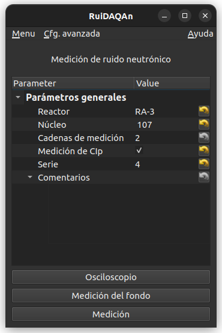
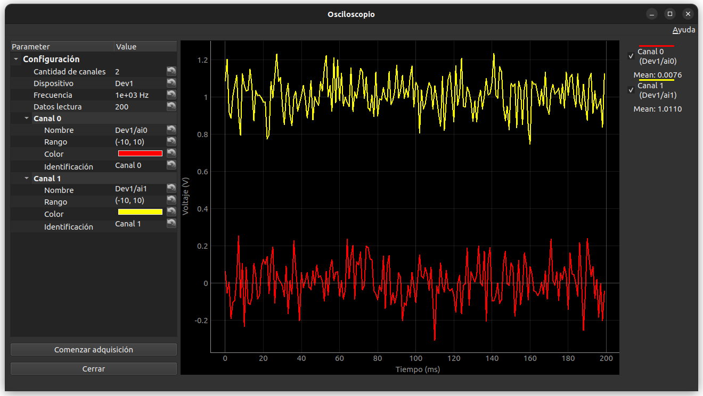
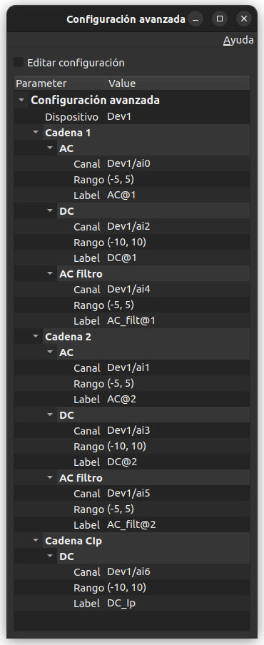
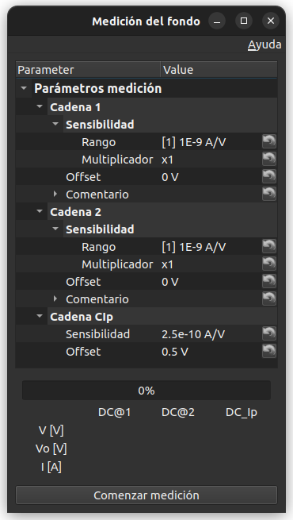
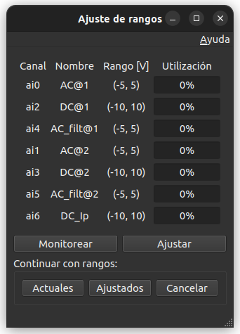
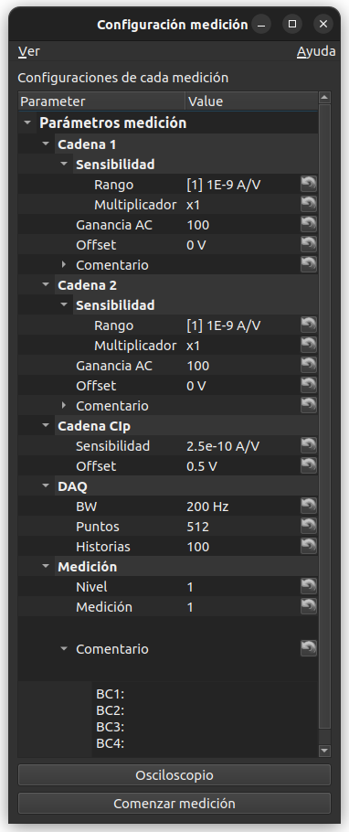
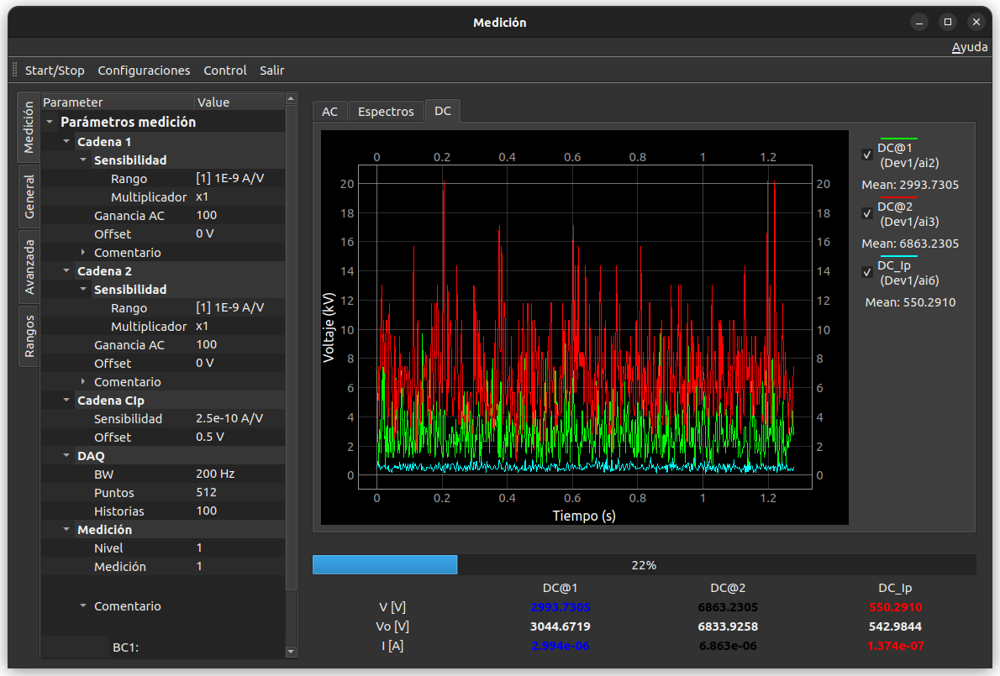
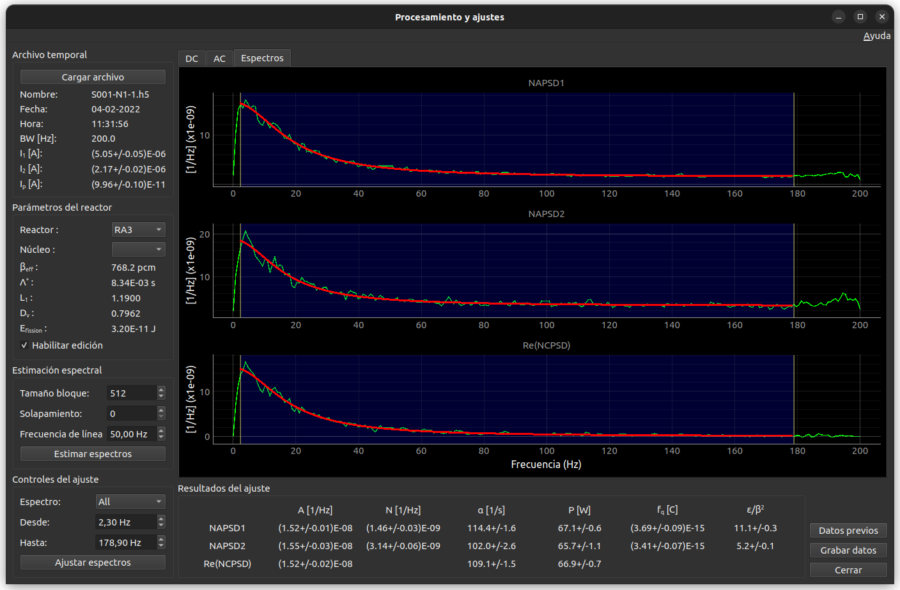

Ventanas#
Se describen los contenidos y comportamientos de las principales ventanas que posee el programa.
Está orientado para ayudar al usuario a entender todos los parámetros relevantes para la adquisición y procesamiento de señales durante una calibración en potencia.
Ventana principal#
Es la ventana principal para la adquisición de datos. Se abre al ejecutar, desde la línea de comandos, cualquiera de los dos comandos:
> ruidaqan adquisicion
> ruidaqan a
En esta ventana se definen los parámetros generales de las mediciones. Los valores aquí definidos serán comunes para todas las mediciones realizadas durante una calibración en potencia.


Parámetros configurables#
- Reactor
Nombre del reactor en donde se realiza la medición. En base a este nombre se elegirán las constantes nucleares como así también las funciones transferencia para normalizar los espectros.
- Núcleo
Identificación del núcleo en donde se realizal a medición. Junto con Reactor se utilizará para elegir las constantes nucleares.
- Cadenas de medición
Cantidad de cadenas neutrónicas utilizadas para la medición. La cantidad mínima es 1. La cantidad máxima está limitada por cuántas señales se pueden adquirir (por cada cadena se adquieren tres señales).
- Medición de CIp
Indica si se utilizará la placa de adquisición para medir la señal de Ip (tildado) o por el contrario, se utilizará el ingreso manual de datos (no tildado).
- Serie
Identificación de la medición. Se utilizará, entre otras cosas, para identificar los nombres de los archivos de datos guardados.
- Comentarios
Cualquier tipo de comentario relevante para la medición.
Osciloscopio#
Aplicación para visualizar las señales conectadas en las distintos canales analógicos de la placa de adquisición.


La adquisición se realiza en forma de bloques, cuya cantidad de puntos se puede configurar.
Se pueden configurar tanto los parámetros comunes a todos los canales, como así también parámetros individuales a cada canal por separado.
- Parámetros comunes
Configuran la forma en que se realizará la adquisición de datos
Cantidad de canales: cantidad de canales que se desean adquirir.
Dispositivo: identificación del dispositivo NI dispinible para la adquisición. Sólo se muestran los disponibles.
Frecuencia: frecuencia de muestreo, en Hertz.
Datos lectura: Cantidad de puntos que se desean adquirir en cada bloque.
- Parámetros de cada canal
Configuran los parámetros de cada canal por separado.
Nombre: identificación del canal analógico. Sólo se muestran los disponibles en la placa de adquisición.
Rango: rango en que se realizará la adquisicón. Sólo se muestran los rangos disponibles en la placa de adquisición.
Color: color que tendrán los datos adquiridos al ser visualizados.
Identificación: nombre con que se identificarán a la curva de datos adquiridos al ser graficados.
En la parte derecha del gráfico se pueden seleccionar, mientras se realiza la adquisición, qué canales visualizar. Para ello se debe tildar o des-tildar la identificación correspondiente a cada canal.
Configuración avanzada#
En esta ventana se permite hacer una configuración detallada de la tarjeta que se utilizará para la adquisición de datos y de sus parámetros asociados.


- Importante:
Esta ventana se debe acceder una vez seteados los parámetros de la `Ventana principal`_ (pues depende de ellos).
Al abrir esta ventana, por default lo hace en modo de sólo lectura. Si se desea modificar los parámetros abrá que tildar, en la parte superior, la opción Editar configuracón
Los parámetros configurables están organizados en tres grupos: dispositivo, cadenas para la medición de ruido neutrónico y cadena para la medición de Ip ( en caso de haber tildado Medición de CIp en la Ventana principal).
- Dispositivo
Selección del dispositivo NI con que se hará la adquisición de datos. Automaticamente se listan todos los dipositivos disponibles. Pueden ser reales o simulados.
- Cadena n
En cada cadena se deben especificar la adquisicón de las tres señales:
AC: Canal donde se hará la adquisición de la componente fluctuante a la salida del filtro anti-aliasing.
DC: Canal donde se hará la adquisición de la componente contínua a la salida del amplificador.
AC filtro: Canal donde se hará la adquisición de la componente fluctuante que entra al filtro anti-aliasing (salida del amplificador).
En cada una de ellas se podrán configurar los siguientes parámetros:
- Canal
Nombre del canal de la tarjeta de adquisición donde se leerá la señal.
- Rango
Rango de la tarjeta con que se medirá la señal.
- Label
Identificación que se le dará a la señal adquirida (es lo que aparecerá en los gráficos).
- Cadena CIp
Aparece sólo si se tildó Medición de CIp en la Ventana principal. Sólamente se configura la adquisición de la señal de DC de dicho detector. Los parámetros son similares a los especificados anteriormente para cada Cadena n.
La lista de canales disponibles, como así también de rangos disponibles, son leídos directamente del Dispositivo indicado.
Por default, el orden en que se especifican los canales coincide con el orden utilizado por el programa FERCIN-3 para la adquisición de dos cadenas de ruido.
Conviente siempre adquirir canales consecutivos. De nos ser posible, se deben corto-circuitear los canales libres intermedios.
Medición de fondo#
Esta ventana permite fijar los parámetros para realizar la medición de fondo.


Los parámetros a configurar están agrupados por cadena de medición.
- Cadena n
Los parámetros configurables asumen que se está trabajando con un amplificador CNEA-K330, aunque existe la opción de introducir los valores de forma personalizada para cualquier otro tipo de amplificador.
- Rango
Rango del amplificador que relaciona la corriente medida (en Amperes) con el voltaje adquirido (en Volts). Se listan los rangos disponibles del amplificador CNEA-K330.
- Multiplicador
Multiplicador del rango. La sensibilidad (S) del amplificador se tomará como: S = multiplicador x rango. Se listan los multiplicadores disponibles del amplificador CNEA-K330.
En caso de seleccionar la opción Otro en el rango en lugar de Multiplicador aparecerá Manual y se podrá escribir directamente la sensibilidad del amplificador utilizado en unidades de A/V.
- Offset
Cero-vivo (en Volts) del amplificador utilizado. Para el CNEA-K330 es cero.
- Comentario
Para introducir cualquier información relevante sobre la medición de fondo.
- Cadena CIp
Sólo aparece en caso de haber tildado Medición de CIp en la Ventana principal.
- Sensibilidad
Sensibilidad del amplificador de CIp utilizada para convertir la corriente medida en voltaje, en unidades de A/V.
- Offset
Cero-vivo (en Volts) del amplificador utilizado para la cadena CIp
Una vez finalizada la configuración, se debe apretar el botón Comenzar medición ubicado en la parte inferior de la pantalla. Al hacerlo, se abrirá la ventana de Ajuste de rangos.
Al comenzar la medición de fondo se podrá ver el avance a través de la barra de progreso.
Se muestran también los voltajes (en Volts) instantáneos de cada señal medida. Los instantáneos (promedio de cada bloque adquirido) y el inicial. Utilizando la sensibilidad y el offset definidos se muestra también la corriente (en Amperes).
Los valores instantáneos cambian de color cuando éstos cambian en más de un 1% respecto al valor inicial (ver clase ProgresoMedicion en procesado_gui.py):
negro: valores dentro del 1% respecto al valor inicial
rojo: valores en más del 1% por encima del valor inicial
azul: valores en más del 1% por debajo del valor inicial
La comparación entre valores instantáneos e iniciales se hace sobre las corrientes medidas (y no sobre los voltajes).
La medición de fondo se hace tomando 512 puntos con una frecuencia de muestreo de 400 Hz. Se toman 100 bloques (o historias) en total (ver clase BackgroundWindow en acquisition_window.py).
- Control de saturación
No se comprueba la saturación de entrada del filtro anti-aliasing.
Tampoco que las señales AC estén en el rango correcto (ya que no intervienen en la medición de fondo). Sólo se comprueba la saturación de rango en las señales DC.
- Archivos generados
Los valores de las corrientes de fondo son guardados en el archivo SXXX-FONDOS (donde XXX es la Serie definida en la Ventana principal). Todas las corrientes con sus incertezas se ordenan por fila (ver encabezado de dicho archivo).
Por compatibilidad con el programa FERCIN3, también se guardan en los archivos FONDO1, FONDO2 (en caso de medir con dos detectores) y FONDO-IP por separado.
Ajuste de rangos#
Esta ventana permitirá ajustar de forma óptima a los rangos utilizados para la adquisición de voltaje de la tarjeta.


Una vez abierta esta ventana, automáticamente se comenzará a buscar cuál es el mejor rango para utilizar con cada canal.
En la parte superior de la pantalla se muestran cuatro columnas que contienen al canal, su identificación (el Label puesto en Configuración avanzada), el rango y el porcentaje de utilización de dicho rango.
- Monitorear
Calcula el porcentaje de utilización de los rangos actuales de la tarjeta (por lo general serán aquellos configurados en Configuración avanzada).
- Ajustar
Selecciona a los mejores rangos disponibles en la tarjeta de acuerdo a las señales medidas en cada canal.
Si los porcentajes de utilización de los rangos no son satisfactorios, se debe cerrar esta ventana, para volver a la anterior y modificar los parámetros del amplificador.
Si los porcentajes de utilización de los rangos son satisfactorios, se puede continuar con alguna de las tres opciones:
- Actuales
Comienza la medición utilizando los rangos actuales de la tarjeta. Esta opción permite trabajar con rangos fijos (aquellos fijados en Configuración avanzada).
- Ajustados
Comienza la medición utilizando los rangos ajustados de acuerdo al criterio (TODO).
- Cancelar
Cierra la ventana sin efectuar ninguna modificación en los rangos. Se retorna a la ventana Medición de fondo para realizar las modificaciones pertinentes.
Si se selecciona Actuales o Ajustados comienza la medición de fondo y se vuelve a la ventana Medición de fondo donde se indicará el progreso de la misma.
Configuración de cada medición#
Esta ventana permite configurar los parámetros relacionados con cada medición individual.


- Cadena n
Los parámetros configurables asumen que se está trabajando con un amplificador CNEA-K330, aunque existe la opción de introducir los valores de forma personalizada para cualquier otro tipo de amplificador.
- Rango
Rango del amplificador que relaciona la corriente medida (en Amperes) con el voltaje adquirido (en Volts). Se listan los rangos disponibles del amplificador CNEA-K330.
- Multiplicador
Multiplicador del rango. La sensibilidad (S) del amplificador se tomará como: S = multiplicador x rango. Se listan los multiplicadores disponibles del amplificador CNEA-K330.
En caso de seleccionar la opción Otro en el rango en lugar de Multiplicador aparecerá Manual y se podrá escribir directamente la sensibilidad del amplificador utilizado en unidades de A/V.
- Ganancia AC
Ganancia que se aplica a la componente fluctuante de la señal. Sólo se permite elegir entre las ganancias disponibles dek amplificador CNEA-K330.
- Offset
Cero-vivo (en Volts) del amplificador utilizado. Para el CNEA-K330 es cero.
- Comentario
Para introducir cualquier información relevante sobre la medición. Está por compatibilidad con el FERCIN3, en el futuro será eliminado.
- Cadena CIp
Sólo aparece en caso de haber tildado Medición de CIp en la Ventana principal.
- Sensibilidad
Sensibilidad del amplificador de CIp utilizada para convertir la corriente medida en voltaje, en unidades de A/V.
- Offset
Cero-vivo (en Volts) del amplificador utilizado para la cadena CIp
- DAQ
Configuración de parámetros relevantes para la adquisición de datos.
- BW
Ancho de banda (en Hz) que se utilizará para la medición. la frecuencia de muestreo será el doble de BW.
- Puntos
Cantidad de datos que se adquirirán por bloque (o historia).
- Historias
Cantidad de historias que se adquirirán por medición
- Medición
Configuración para identificar a cada medición
- Nivel
Número que identifica al nivel de potencia en que se está midiendo
- Medición
Número para identificar a la medición dentro de un mismo Nivel
- Comentario
Cualquier comentario relevante a la medición en particular.
Este campo será el reemplazo de los comentarios que se hacen dentro de cada Cadena n.
En el menú superior se encuentra un botón para abrir la ventana de Ajustes en caso de que se quiera analizar una medición ya realizada.
En la parte inferior se encuentran los botones para abrir el Osciloscopio y para Comenzar la medición.
Al apretar Comenzar la medición, primero se abrirá la ventana de Ajuste de rangos idéntica a la descripta anteriormente. Una vez ajustados los rangos se abrirá la ventana de Medición y la medición comenzará automáticamente.
Medición#
Esta ventana muestra los datos adquiridos mientras se está efectuando la medición. Permite también ver el progreso de la misma y comprobar los valores más relevantes.


- Gráficos
Los gráficos se organizan a través de tres solapas (AC, Espectros y DC):
- AC
Muestra el gráfico con los valores de las componentes fluctuantes de las señales medidas. Se actualiza con cada historia leída.
- Espectros
Muestra el espectro asociado de la componente fluctuantes AC. Con cada nueva historia adquirida se calcula un espectro. El gráfico que se muestra consiste en los promedios de todos los espectros adquiridos hasta ese momento.
Importante: los espectros no están normalizados con las corrientes medias, como así tampoco están corregidos por la función transferencia. Sólo se lo pone para ir viendo si la forma del espectro es la esperada.
- DC
Muestra el gráfico con los valores de las componentes contínuas de las señales medidas. Se actualiza con cada historia leída.
En todas las pestañas es posible elegir qué señales se mostrarán al tildar o no tildar la identificación de cada señal en la columna a la derecha de los gráficos.
En la parte inferior se muestra información sobre el progreso de la medición y sobre los valores medios medidos. Son idénticos a los descriptos en la ventana de Medición de fondo.
Procesamiento y ajustes#
Es la ventana que permite procesar los datos medidos y realizar los ajustes espectrales para obtener los parámetros cinéticos de interés.
Puede ser considerado como un programa en sí mismo, pero que está acoplado a la ventana de adquisición. Se llega a ella mediante dos maneras:
A través de la consola, escribiendo cualquiera de los siguientes comandos:
> ruidaqan procesamiento > ruidaqan p
De esta forma habrá que abrir manualmente el archivo con los datos adquiridos. La ventana funciona de forma autónoma.
Automáticamente se abrirá esta ventana al finalizar una adquisición de datos.
En este caso, se abre el archivo corresponiente a la medición que acaba de finalizar.


El uso de esta ventana consiste en cuatro etapas consecutivas:
Cargado del archivo con los datos medidos
Selección de los parámetros cinéticos del reactor
Estimación de los espectros (NPSD y/o CPSD)
Ajuste de los espectros para obtener los parámetros cinéticos
Dependiendo de cómo se llame a esta ventana, es posible que muchas de estas etapas se ejecuten automáticamente (con parámetros por default o leidos del archivo con los datos adquiridos).
1. Cargado del archivo#
Permite abrir el archivo que contiene los datos adquiridos. Reconoce los siguientes archivos:
Archivos grabados por el programa
RuiDAQAnTanto en el formato HDF5 (extensión .h5) como con el formato similar al FERCIN3 (extensión .RUI)
Archivos grabados con el programa
FERCIN3Son archivos con extensión .RUI. La mayoría de las veces se los reconoce por haber sido generados a partir de una DAQ de 12 bits.
Archivos grabados con el programa
FERCIN3-VB`Son archivos con extensión .RUI. La mayoría de las veces se los reconoce por haber sido generados a partir de una DAQ con 16 bits.
Como se puede ver, los archivos con formato .RUI pueden venir de distintos programas de adquisición. Se los diferencia por la cantidad de bits de la DAQ (se analizan los datos adquiridos, es confiable para identificar una DAQ de 16 bits, pero para una de 12 bits puede ser erróneo).
Tanto los programas RuiDAQAn como FERCIN3-VB trabajan con DAQ de 16
bits. La diferencia radica en que el primero genera un archivo extra con los
valores de los coeficientes para pasar de enteros a voltajes
(SXX-coeficientes_int_to_volt.pkl dentro de la carpeta datos).
Entonces, al cargar el .RUI, el programa busca dicho archivo. Si no lo
encuentra, asume que fue generado por el FERCIN3-VB y se toman
coeficientes genéricos.
2. Selección de los parámetros cinéticos del reactor#
Se deberá seleccionar el reactor y, de ser necesario, el núcleo en donde se
realizaron las mediciones. Estos datos están incluidos en los archvios .h5,
por lo cual la selección se hace automáticamente. De todas formas, si se desea
modificar esos parámetros, se debe tildar Habilitar edición.
Si se abre un .RUI se debe saber de ante-mano en qué reactor se realizó la medición.
Los datos cinéticos son leidos del archivo
ruidaqan/constantes/constantes_reactores.py ubicado en la carpeta donde
se instaló el paquete. Si se quieren agregar o modificar datos, se deberá
editar dicho archivo (y volver a abrir el programa).
3. Estimación de los espectros#
En esta parte se configuran los parámetros que definen cómo se hará la estimación espectral.
Se utilizará el estimador de Welch para los espectros (se dividen todos los datos en bloques, con o sin solapamiento, se calculan espectros de cada bloque y finalmente se promedian).
- Tamaño bloque
Cantidad de datos que se utilizarán para calcular cada espectro.
- Solapamiento
Cantidad de datos que se solaparán entre bloques consecutivos
- Frecuencia de línea
Se utilizará para eliminar el pico en el espectro correspondiente a la frecuencia de línea y a sus dos primeros armónicos (\(f_l, 2f_l\text{ y } 3f_l\)). La forma de eliminar el pico es buscando el punto donde ocurre y borrando dicho punto con sus dos vecinos.
4. Ajuste de los espectros#
Se define el rango de frecuencias en donde se hará el ajuste.
Los valores por default coinciden con los utilizados por el programa FERCIN3.
Se pueden seleccionar los espectros individualmente o todo juntos, a través del combo-box Espectros. La selección también se puede hacer moviendo la zona de ajuste desde el mismo gráfico.
Cuando se abre un archivo .h5, los pasos 1 a 4 se realizan automáticamente.
Una vez realizado el ajuste, aparecerán los resultados en la parte inferior de la ventanaUna vez realizado el ajuste, aparecerán los resultados en la parte inferior de la ventana.
Los botones a la derecha son:
- Datos previos
Basado en el número de serie del archivo con datos, se abrirá (de existir) la ventana de `Resultados`_ con los datos de las mediciones previas de la misma serie.
Se abre el archivo
SXXX-resultados_ajustes.pkl.- Grabar datos
Una vez que se está conforme con los resultados del ajuste, es necesario apretar este botón para que queden guardados.
Se guarda en el archivo
SXXX-resultados_ajustes.pkl.Importante: Si no se aprieta este botón, no se guardan los datos.
- Cerrar
Cierra la ventana del programa.